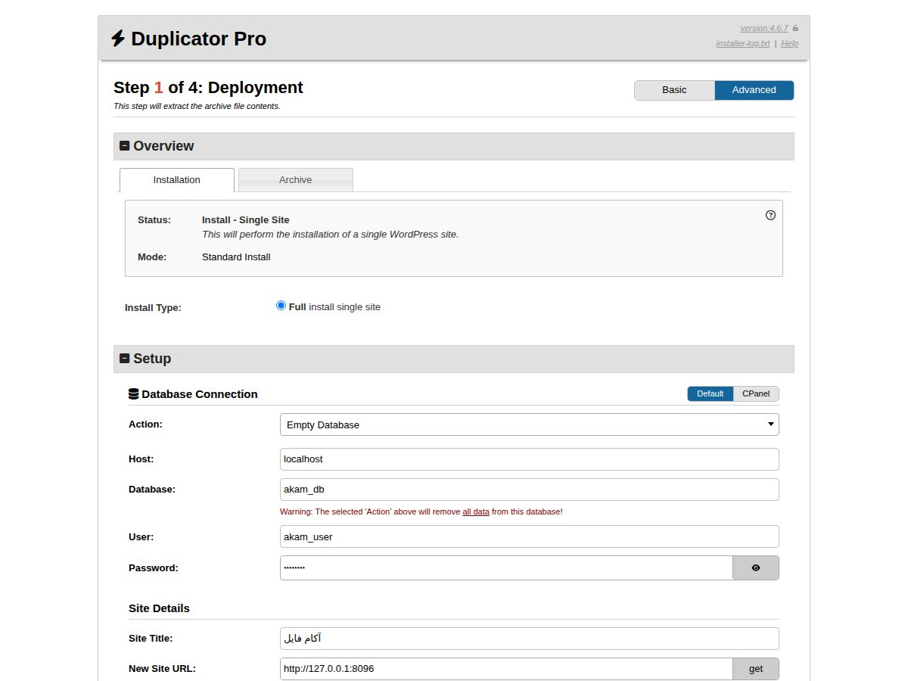
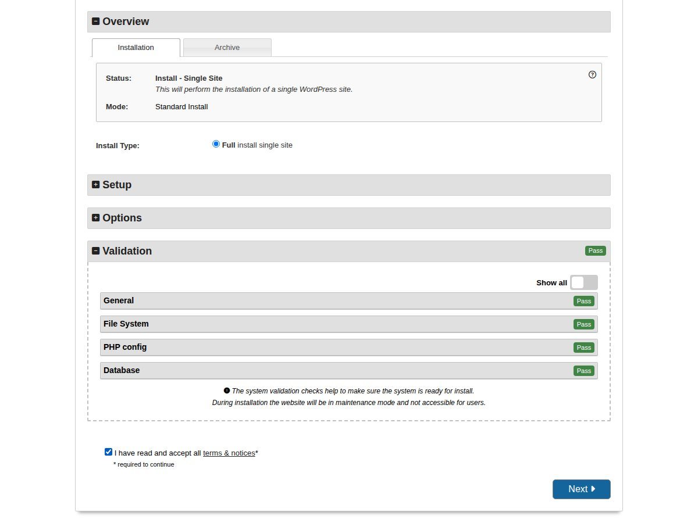
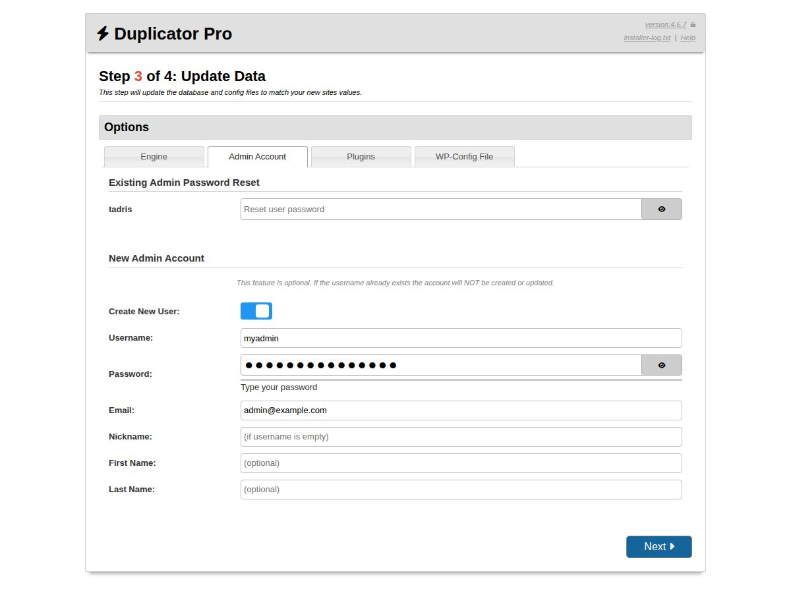
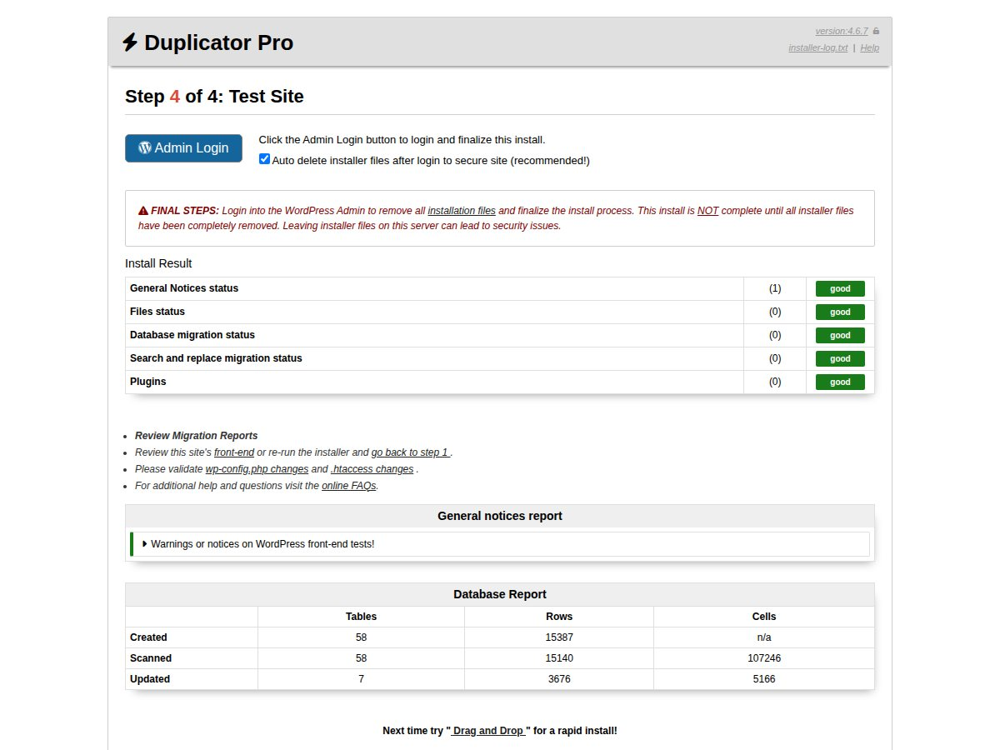

پوسته آموزشی و فروشگاهی آکام برای وردپرس و المنتور
نسخه ۱٫۵٫۰
محتویات بسته
پیشنیازهای هاست
دموهای آماده
روش اول: نصب آسان دمو (پیشنهادی)
روش دوم: نصب پوسته روی وردپرس موجود
فعالسازی لایسنس
تنظیمات پوسته
بهروزرسانی پوسته
رفع مشکلات رایج و پشتیبانی
۱. محتویات بسته
پوشه / فایل
توضیح
easyInstaller
بستههای «نصب آسان» هر پنج دمو. هر فایل zip شامل installer.php و فایل آرشیو همان دمو است و سایت را دقیقاً مانند دموی آنلاین (با محتوا، تنظیمات، افزونهها و پوسته) نصب میکند.
plugins
آخرین نسخه افزونههای المنتور و ووکامرس برای نصب دستی.
theme
پوسته اصلی (akam-1.5.0.zip) و پوسته فرزند (akam-child-1.5.0.zip).
help.pdf
همین راهنما.
۲. پیشنیازهای هاست
وردپرس ۶٫۰ یا بالاتر و PHP نسخه ۷٫۴ یا بالاتر (پیشنهاد: PHP ۸٫۱ یا ۸٫۳)
MySQL ۵٫۷+ یا MariaDB ۱۰٫۳+
ionCube Loader فعال (برای فایل لایسنس راستچین ضروری است؛ در بیشتر هاستها از بخش «Select PHP Version» یا با درخواست از پشتیبانی هاست فعال میشود)
افزونههای PHP: zip، mysqli، mbstring، gd یا imagick، intl
آکادمی آموزش آنلاین (دورههای ویدیویی، پادکست، ویدیوهای رایگان)
دمو ۲
akam-1.5.0-demo-2.zip
آموزش طراحی وب و برنامهنویسی، فروش دوره و محصولات دیجیتال
دمو ۳
akam-1.5.0-demo-3.zip
آموزشگاه زبان (استوری، پلیلیست ویدیویی، معرفی اساتید)
دمو ۴
akam-1.5.0-demo-4.zip
فروشگاه فایل: قالب، افزونه، فونت، فایل گرافیکی و کتاب الکترونیک
دمو ۵
akam-1.5.0-demo-5.zip
آکادمی روانشناسی و مشاوره (دورهها، روانشناسان، بستههای مشاوره)
نصب آسان، محتوای فعلی سایت را جایگزین میکند. آن را روی دامنه یا پوشهای خالی اجرا کنید یا پیش از نصب از سایت فعلی نسخه پشتیبان بگیرید.
۴. روش اول: نصب آسان دمو (پیشنهادی)
در این روش وردپرس، پوسته، افزونهها و تمام محتوای دمو یکجا نصب میشوند و به نصب جداگانه وردپرس نیازی نیست.
ساخت دیتابیس: از کنترلپنل هاست (سیپنل یا دایرکتادمین) یک دیتابیس خالی و یک کاربر دیتابیس بسازید و کاربر را با همه دسترسیها به دیتابیس متصل کنید. نام دیتابیس، نام کاربری و رمز را یادداشت کنید.
آمادهسازی پوشه: پوشه اصلی سایت (معمولاً public_html) باید خالی باشد.
آپلود فایلها: فایل zip دموی دلخواه را از پوشه easyInstaller روی کامپیوتر خود باز کنید. دو فایل installer.php و demo_N_..._archive.zip را بدون تغییر نام و بدون اکسترکت کردن آرشیو در پوشه اصلی سایت آپلود کنید.
اجرای نصبکننده: آدرس https://yourdomain.com/installer.php را در مرورگر باز کنید.
مرحله ۱ (Deployment): بالای صفحه گزینه Advanced را انتخاب کنید. در بخش Database Connection مقدار Action را روی Empty Database بگذارید و Host (معمولاً localhost)، نام دیتابیس، نام کاربری و رمز را وارد کنید. آدرس جدید سایت (New Site URL) خودکار پر میشود؛ آن را بررسی کنید.

مرحله ۱: انتخاب حالت Advanced و وارد کردن اطلاعات دیتابیس
روی Validate کلیک کنید. وقتی همه موارد Pass شدند، تیک I have read and accept all terms & notices را بزنید و Next را بزنید و پنجره تأیید را با OK بپذیرید. استخراج فایلها چند دقیقه طول میکشد.

بررسی پیشنیازها و پذیرش شرایط
مرحله ۲ (Install Database): تغییری لازم نیست؛ روی Next کلیک کنید.
مرحله ۳ (Update Data) – ساخت مدیر سایت: در بخش Options تب Admin Account را باز کنید، گزینه Create New User را روشن کنید و نام کاربری، رمز عبور قوی و ایمیل مدیر را وارد کنید. سپس Next را بزنید. (یا در بخش Existing Admin Password Reset برای مدیر موجود دمو رمز جدید تعیین کنید.)

مرحله ۳: ساخت حساب مدیر با نام کاربری و رمز دلخواه
مرحله ۴ (Test Site): روی Admin Login کلیک کنید و با نام کاربری و رمزی که در مرحله ۳ ساختید وارد پیشخوان شوید. با ورود، فایلهای نصبکننده بهصورت خودکار از هاست حذف میشوند.

مرحله ۴: ورود به پیشخوان و پایان نصب
پس از نصب: یک بار به «تنظیمات ← پیوندهای یکتا» بروید و «ذخیره تغییرات» را بزنید. سپس لایسنس پوسته را فعال کنید (بخش ۶). افزونه Duplicator Pro فقط برای نصب لازم بود و میتوانید آن را غیرفعال و حذف کنید.
۵. روش دوم: نصب پوسته روی وردپرس موجود
از پیشخوان وردپرس به «نمایش ← پوستهها ← افزودن ← بارگذاری پوسته» بروید و فایل theme/akam-1.5.0.zip را نصب کنید.
به همین روش فایل theme/akam-child-1.5.0.zip را نصب و پوسته فرزند را فعال کنید. تغییرات شخصی (کدهای CSS یا PHP) را فقط در پوسته فرزند انجام دهید تا با بهروزرسانی از بین نروند.
از «افزونهها ← افزودن ← بارگذاری افزونه» فایلهای پوشه plugins (المنتور و ووکامرس) را نصب و فعال کنید.
لایسنس پوسته را فعال کنید (بخش ۶) و از منوی «آکام» در پیشخوان تنظیمات پوسته را انجام دهید.
در این روش محتوای دموها نصب نمیشود و سایت را با ویجتهای المنتور پوسته (دسته «آکام» در المنتور) از ابتدا میسازید. برای داشتن ظاهر و محتوای دموها از روش اول استفاده کنید.
۶. فعالسازی لایسنس
پس از فعال کردن پوسته، پیغام «لطفا لایسنس پوسته آکام را از پنل وارد کنید» در پیشخوان نمایش داده میشود.
کد لایسنس را از حساب کاربری خود در راستچین (بخش دانلودها) دریافت کنید و در صفحه فعالسازی لایسنسی که پوسته به پیشخوان اضافه میکند وارد کنید.
تا پیش از فعالسازی لایسنس، تنظیمات پیشرفته پوسته در دسترس نیست. برای تست روی کامپیوتر شخصی (localhost) به لایسنس نیازی نیست.
اگر پیغام ionCube Loader نمایش داده شد، ionCube را از کنترلپنل هاست فعال کنید یا از پشتیبانی هاست بخواهید.
۷. تنظیمات پوسته
منوی «آکام» در پیشخوان: رنگها و فونت پوسته، لایهبندی هدر و فوتر، حساب کاربری و پیامک، افکتهای هاور، دستیار هوشمند پشتیبانی (AvalAI / GapGPT) و سایر تنظیمات.
لایهبندیها: هدر، فوتر، صفحه محصول، صفحه نوشته و آرشیوها با المنتور ساخته شدهاند و از منوی «لایهبندیها» قابل ویرایش هستند.
محصولات و دورهها: در صفحه ویرایش هر محصول، سرفصلها، سوالات متداول، ویژگیها، مدرس دوره، متن دکمه خرید و ویدیوی معرفی (لینک مستقیم، آپارات یا یوتیوب) را وارد کنید.
مدرسین، استوریها و مگامنو: از منوهای «مدرسین»، «استوریها» و «محتوای مگامنو» مدیریت میشوند.
۸. بهروزرسانی پوسته
پیش از بهروزرسانی از سایت نسخه پشتیبان بگیرید.
فایل بروزرسان (نسخه جدید akam-x.y.z.zip) را از حساب راستچین دریافت کنید.
از «نمایش ← پوستهها ← افزودن ← بارگذاری پوسته» فایل را انتخاب کنید و در صفحه بعد گزینه «جایگزینی نسخه فعلی با نسخه بارگذاریشده» را بزنید.
پوسته فرزند را بهروزرسانی نکنید؛ تغییرات شما در آن حفظ میشود.
۹. رفع مشکلات رایج و پشتیبانی
مشکل
راهحل
صفحه سفید یا خطای ۵۰۰ هنگام نصب آسان
مقدار memory_limit و max_execution_time را افزایش دهید و نصب را دوباره اجرا کنید.
آپلود فایل آرشیو ناقص میماند
فایل را با FTP یا File Manager آپلود کنید و حجم آن را با فایل اصلی مقایسه کنید.
لینک صفحات خطای ۴۰۴ میدهد
«تنظیمات ← پیوندهای یکتا ← ذخیره تغییرات» را بزنید.
ظاهر صفحات بههمریخته است
از «المنتور ← ابزارها» گزینه «بازسازی CSS و دادهها» را بزنید و کش افزونهها و مرورگر را پاک کنید.
پیغام فعالسازی لایسنس
بخش ۶ را ببینید؛ ionCube باید فعال باشد.
برای پشتیبانی از طریق سیستم تیکت در حساب کاربری راستچین با ما در ارتباط باشید و آدرس سایت و شرح کامل مشکل را بنویسید.